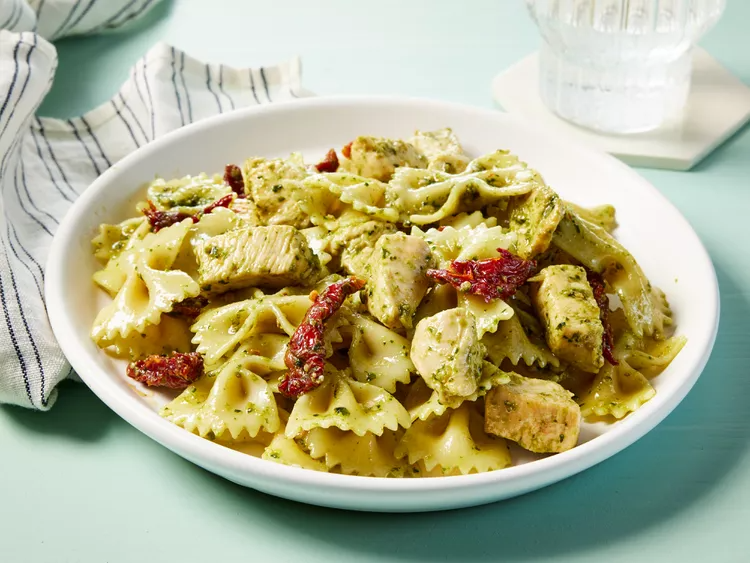

Pesto Pasta with Chicken

Description
This chicken pesto pasta is easy to make and delicious. You are free to use as much or as little pesto sauce as you like.
Pair with bread and salad to complete the meal.
Ingredients
- 1 16 oz. package bowtie pasta
- 1 tsp. olive oil
- 2 cloves garlic, minced
- 2 boneless, skinless chicken breasts
- 1 pinch crushed red pepper flakes
- 1/2 cup pesto sauce
- 1/3 oil-packed sun-dried tomatoes, drained
Directions
- Gather ingredients, bring large pot of lightly salted water to boil.
Add pasta to water, cook until al dente (8 - 10 minutes); drain.
- Heat oil in a large skillet over medium heat. Sauté garlic until tender.
- Stir in chicken and season with red pepper flakes. Cook until chicken is golden and cooked through.
- Combine pasta, chicken, pesto, and sun-dried tomatoes in a large bowl; toss to coat evenly.
Back